About
Hi everyone 👋 – I am Florian and I am a PostDoc at IT:U's Secure and Resilient Infrastructures Research Group and former PhD student at the University of Vienna's Security & Privacy Research Group (SEC) and the Network & Critical Infrastructure Security Group (ERIS) at SBA-Research.
During my master studies I joined Team ERIS as a junior researcher. With my supervisor Johanna, we found an entry point for Internet measurements in Austria (aim.sba-research.org).
My research focuses on measuring and mapping the Internet. I study security and privacy aspects of protocol adoption, digital sovereignty, the transition toward an agentic Internet, the network-layer shift to IPv6, and active measurement techniques for detecting Internet outages.
Measurement Platforms
To make my measurements accessible to everyone, I try to build open measurement platforms.
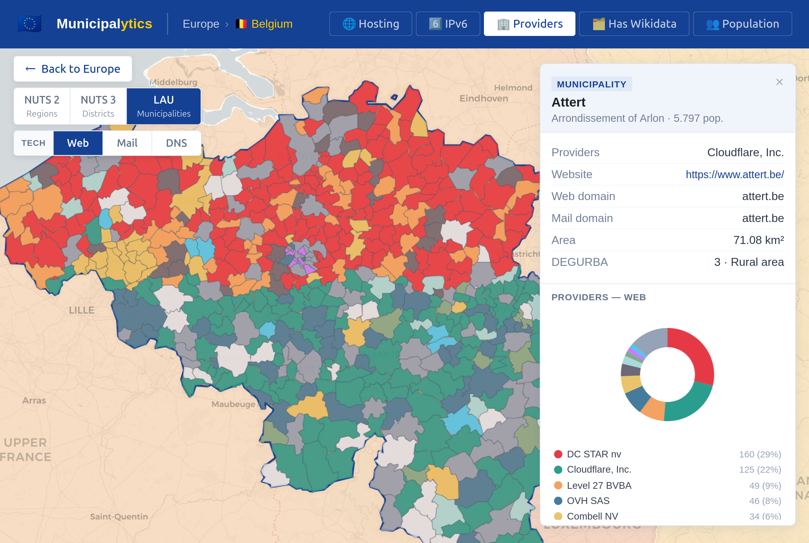
🇪🇺 Municipalytics
Maps municipal infra.
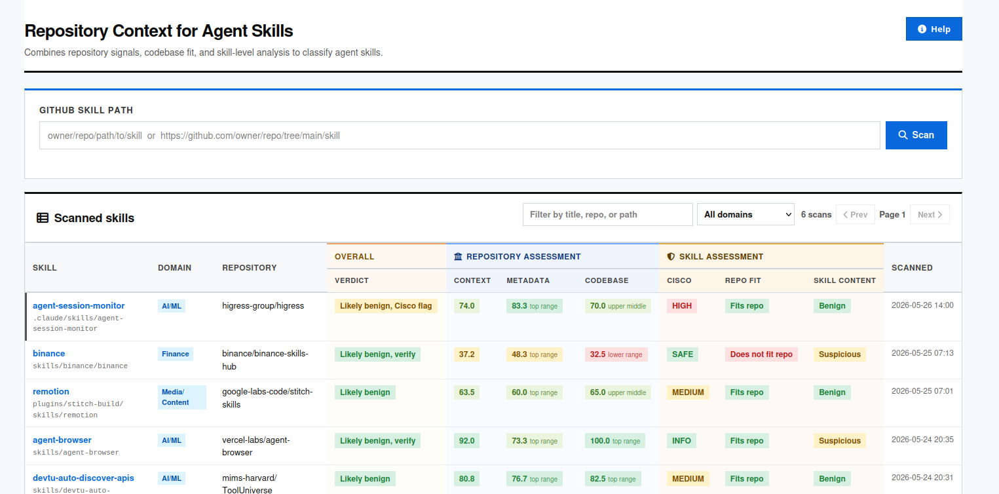
🤹🏻♀️ Agent Skills
Adds repository context.
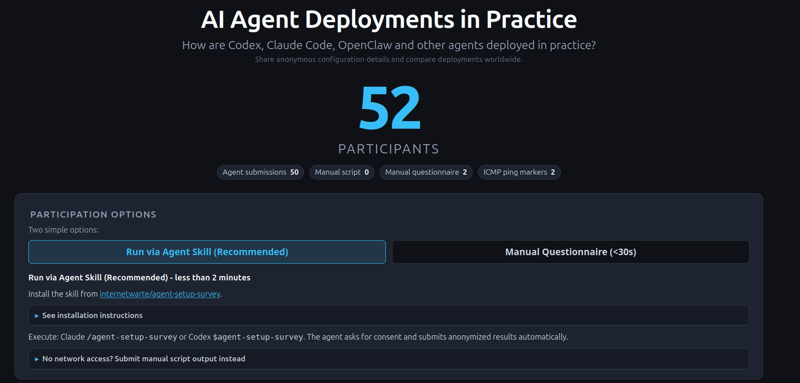
👾 Agent Setup
Asseses agent environment.
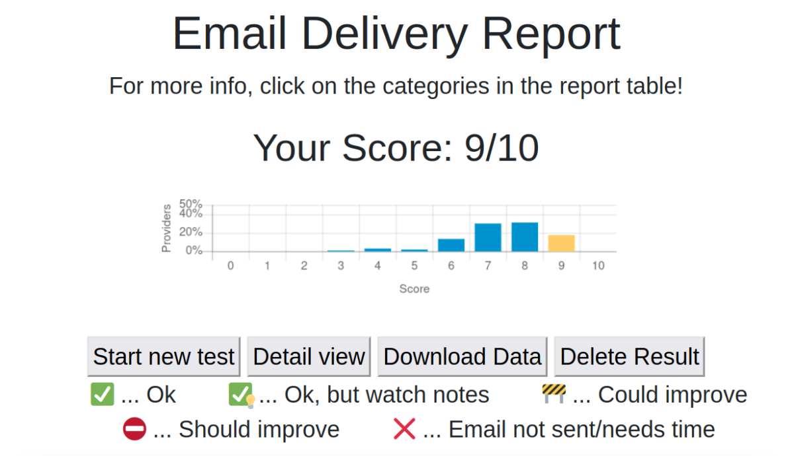
📧 Email Security
Ranks email servers.
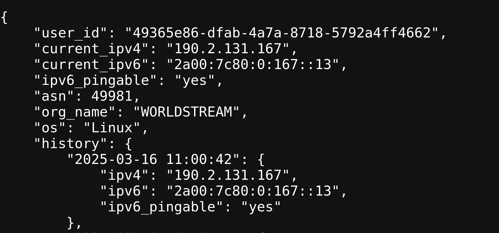
📍 IP Endpoint
Tracks public IPs.
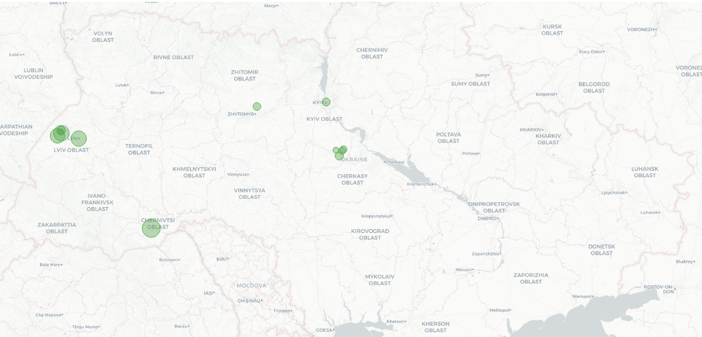
🌐🔌 Country Monitor
Detects Internet disruptions.
Talks
LIST
- 🇳🇱 2026, July, 1st, TMA, Municipalytics: Mapping the Digital Infrastructure of Municipalities Across GDPR Countries (Delft, NL).
- 🇺🇸 2026, May 26th, CAIS - Agent Skills, Context Matters: Repository-Aware Security Analysis of the Agent Skill Ecosystem (San José, CA, USA).
- 🇦🇹 2026, Feb 19th, Defensio, Turning Failure into Knowledge: Extending the Observable Internet by Leveraging Delivery Failures (Uni Wien, Vienna, AT).
- 🇺🇸 2025, Oct 28th, IMC, Tracking Internet Disruptions in Ukraine: Insights from Three Years of Active Full Block Scans (Madison, WI, USA). Slides
- 🇩🇪 2025, Sept 17/18th, ISMK, From Ping to Blackout: Tracking Internet Disruptions in Ukraine Since 2022 (Stralsund, DE).
- 🇦🇹 2025, Jun 25/26th, IKT, Von Österreich zur Ukraine und zurück: Aktive Messungen zum Erkennen von Internetausfällen (Dornbirn, AT).
- 🇦🇹 2025, Feb 25th, Security Meetup, From Ping to Blackout: Active Measurements on Internet Disruptions in Ukraine Kherson (Dynatrace, Vienna, AT).
- 🇦🇹 2025, Feb 24th, ATNOG 25/1, Von Österreich zur Ukraine und zurück: Aktive Messungen zum Erkennen von Internetausfällen (Linz AG, Linz, AT).
- 🇦🇹 2024, Sept 18th, IKT, Analyse rerouting Internet in Kherson (Vienna, AT).
- 🇪🇸 2024, Nov 05th, IMC, Destination Reachable: What ICMPv6 Error Messages Reveal About Their Sources (Madrid, ES). Slides
- 🇺🇸 2022, July, USENIX ATC, Not That Simple: Email Delivery in the 21st Century (Carlsbad, US).
2026, July 1st, TMA
Municipalytics: Mapping the Digital Infrastructure of Municipalities Across GDPR Countries
Delft, NL.
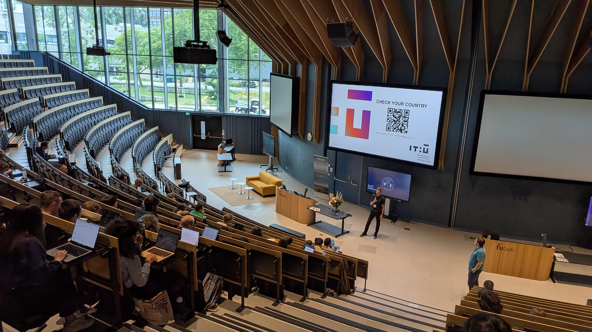
2026, May 26th, CAIS - Agent Skills
Context Matters: Repository-Aware Security Analysis of the Agent Skill Ecosystem
San José, CA, USA.
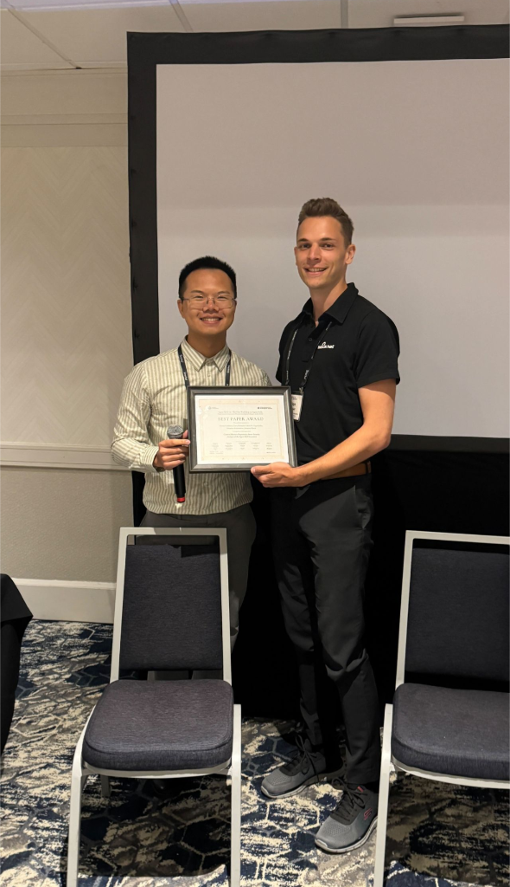
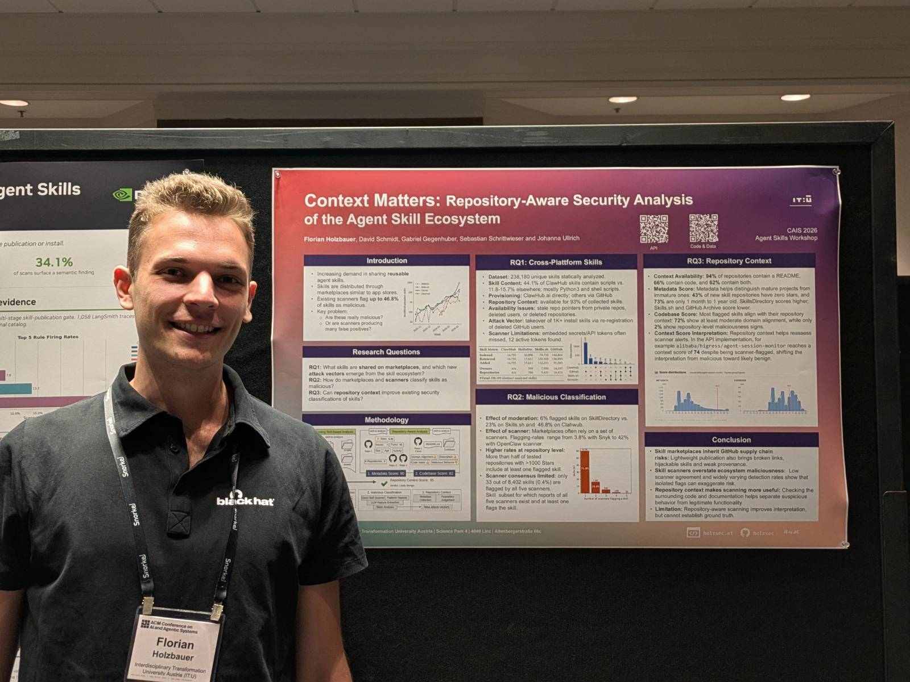
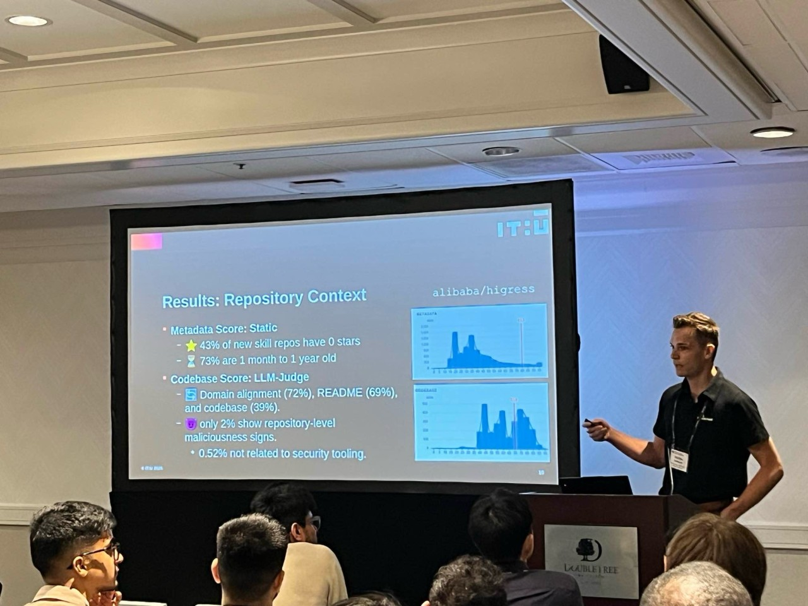
2026, Feb 19th, Defensio
Turning Failure into Knowledge: Extending the Observable Internet by Leveraging Delivery Failures
Uni Wien, Vienna, AT.
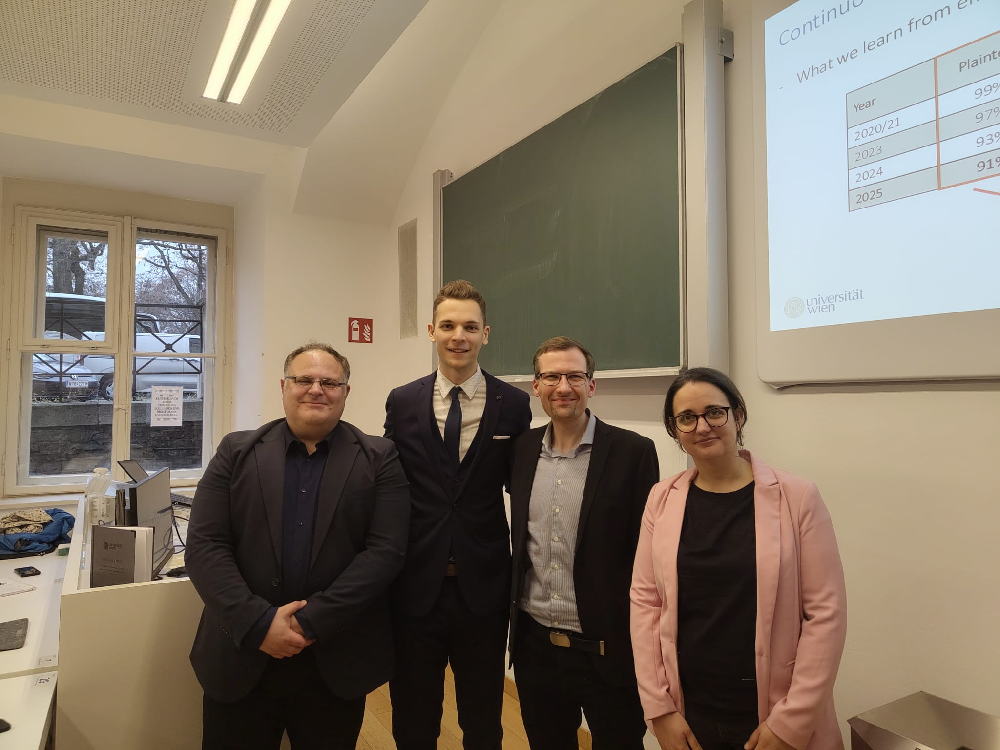
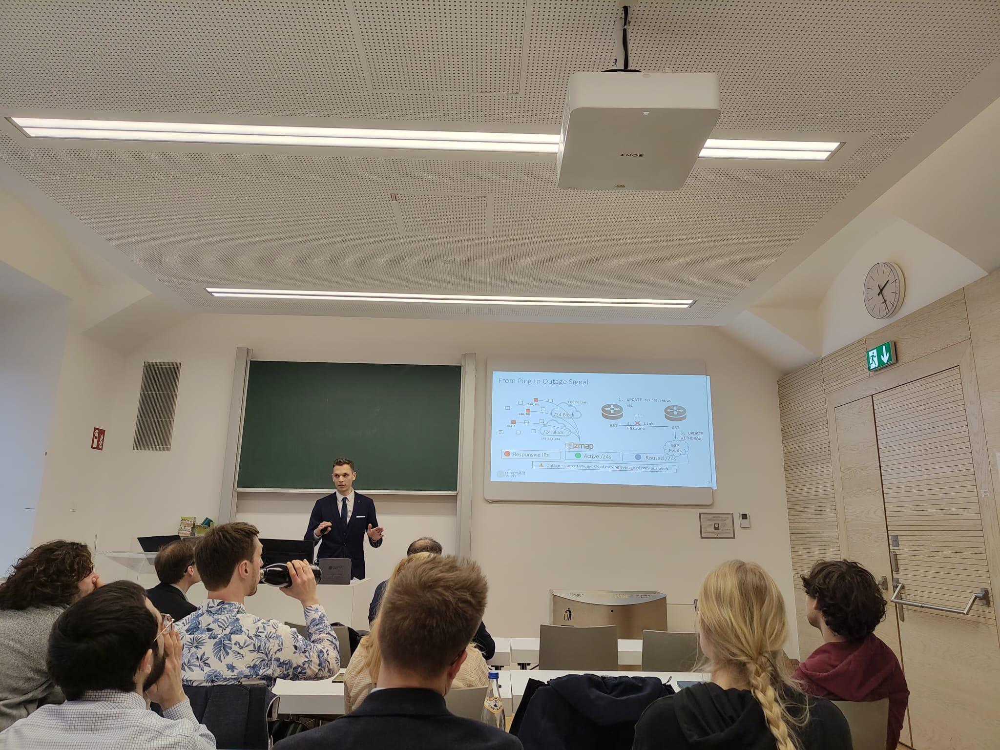
2025, Oct 28th, IMC
Tracking Internet Disruptions in Ukraine: Insights from Three Years of Active Full Block Scans
Madison, WI, USA.
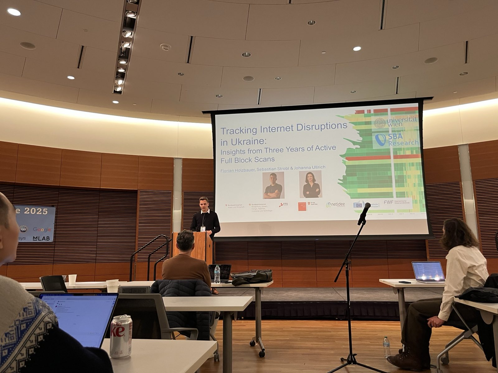
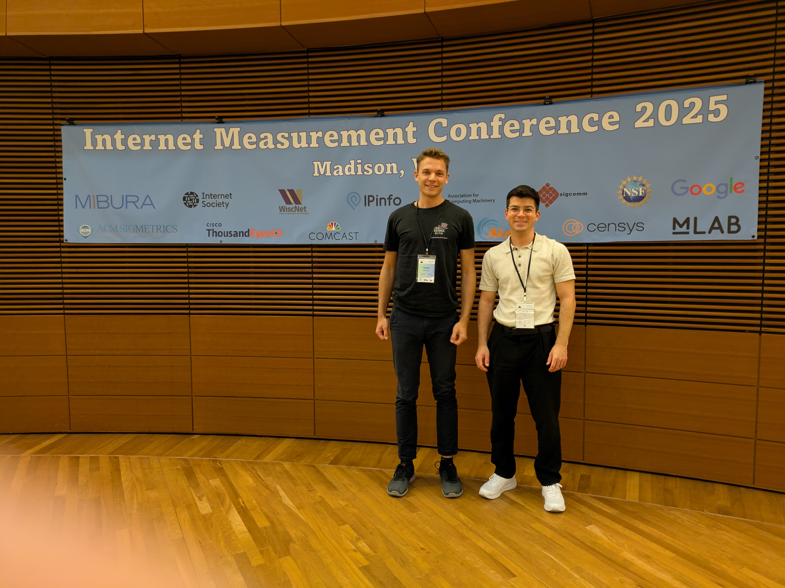
2025, Sept 17/18th, ISMK
From Ping to Blackout: Tracking Internet Disruptions in Ukraine Since 2022
Stralsund, DE.

2025, Jun 25/26th, IKT
Von Österreich zur Ukraine und zurück: Aktive Messungen zum Erkennen von Internetausfällen
Dornbirn, AT.


2025, Feb 25th, Security Meetup
From Ping to Blackout: Active Measurements on Internet Disruptions in Ukraine Kherson
Dynatrace, Vienna, AT.

2025, Feb 24th, ATNOG 25/1
Von Österreich zur Ukraine und zurück: Aktive Messungen zum Erkennen von Internetausfällen
Linz AG, Linz, AT.

2024, Sept 18th, IKT
Analyse rerouting Internet in Kherson
Vienna, AT.
2024, Nov 05th, IMC
Destination Reachable: What ICMPv6 Error Messages Reveal About Their Sources
Madrid, ES.
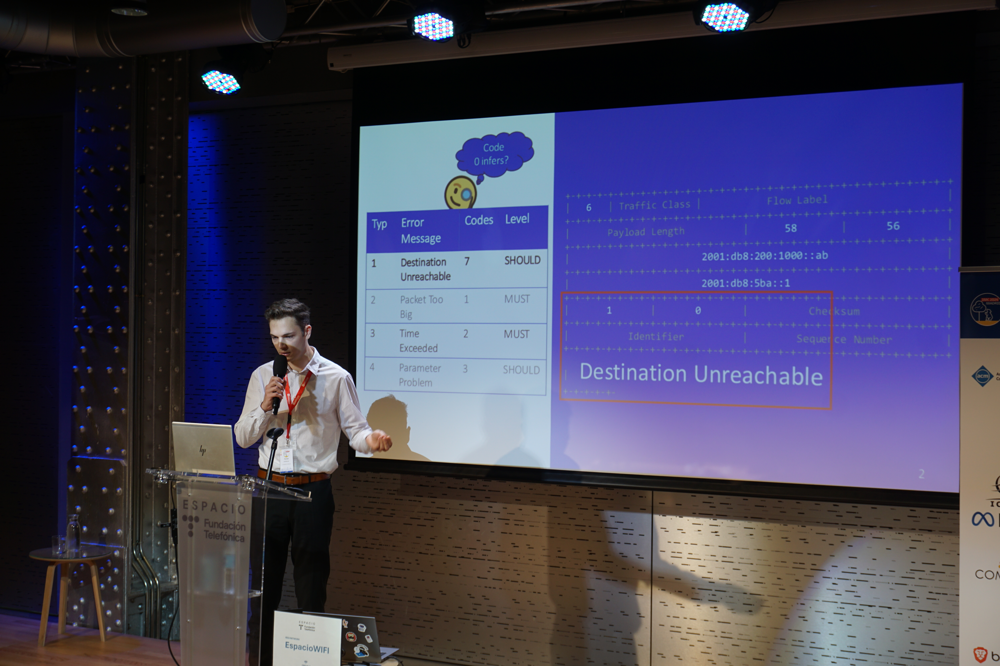
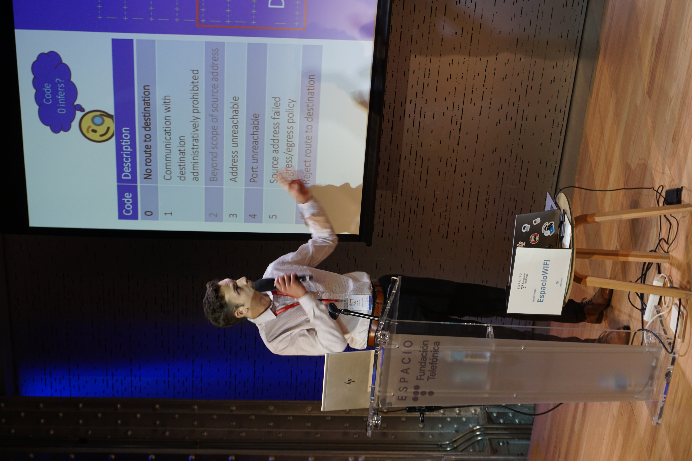
2022, July, USENIX ATC
Not That Simple: Email Delivery in the 21st Century
Carlsbad, US.

Publications
2026
Municipalytics: Mapping the Digital Infrastructure of Municipalities Across GDPR Countries
F Holzbauer, Gabriel Gegenhuber, Johanna Ullrich
🏆 Distinguished with the Community Contribution Award at TMA'26 Network Traffic Measurement and Analysis Conference
MAP; PAPER; SLIDES;
###### **Context Matters: Repository-Aware Security Analysis of the Agent Skill Ecosystem**BIBTEX
@inproceedings{holzbauer2026municipalytics, author = {Holzbauer, Florian and Gegenhuber, Gabriel and Ullrich, Johanna}, title = {{Municipalytics: Mapping the Digital Infrastructure of Municipalities Across GDPR Countries}}, booktitle = {Proceedings of the Network Traffic Measurement and Analysis Conference (TMA 2026)}, year = {2026}, address = {Delft, Netherlands}, url = {https://tma.ifip.org/2026/wp-content/uploads/sites/15/2026/06/tma2026-final48.pdf} }
**F Holzbauer**, David Schmidt, Gabriel Gegenhuber, Sebastian Schrittwieser, Johanna Ullrich
*🏆 Distinguished with the Best Paper Award at CAIS'26 Agent Skills Workshop* > PAPER; SLIDES; POSTER; CODE & DATA###### **Turning Failure into Knowledge: Extending the Observable Internet by Leveraging Delivery Failures**BIBTEX
@article{holzbauer2026context, title={Context Matters: Repository-Aware Security Analysis of the Agent Skill Ecosystem}, author={Holzbauer, Florian and Schmidt, David and Gegenhuber, Gabriel K and Schrittwieser, Sebastian and Ullrich, Johanna}, year={2026} }
**F Holzbauer**
*PhD Thesis at the Faculty of Computer Science at University of Vienna* > THESIS SLIDES#### 2025 ###### **Tracking Internet Disruptions in Ukraine: Insights from Three Years of Active Full Block Scans**BIBTEX
@article{holzbauer2026turning, author = {Holzbauer, Florian}, title = {Turning Failure into Knowledge: Extending the Observable Internet by Leveraging Delivery Failures}, year = {2026}, school = {University of Vienna}, address = {Wien}, type = {Dissertation}, pages = {ix, 78}, doi = {10.25365/thesis.80590}, url = {https://doi.org/10.25365/thesis.80590}, keywords = {Internet measurement, Delivery failures, Protocol adoption, Public Internet, IPv6, Internet outages, Email security, Measurement platforms} }
**F Holzbauer**, Sebastian Strobl, Johanna Ullrich
*Proceedings of the 2025 ACM Internet Measurement Conference (IMC '25), 474–492* > PAPER; SLIDES; DATA###### **Careless Whisper: Exploiting Stealthy End-to-End Leakage in Mobile Instant Messengers**BIBTEX
@inproceedings{holzbauer2025tracking, title = {Tracking Internet Disruptions in Ukraine: Insights from Three Years of Active Full Block Scans}, author = {Florian Holzbauer and Sebastian Strobl and Johanna Ullrich}, booktitle = {Proceedings of the 2025 ACM Internet Measurement Conference (IMC '25)}, year = {2025}, location = {USA}, pages = {474--492}, publisher = {ACM}, doi = {10.1145/3730567.3764449} }
GK Gegenhuber, M Günther, M Maier, A Judmayer, **F Holzbauer**, PÉ Frenzel, Johanna Ullrich
*🏆 Distinguished with the Best Paper Award at RAID 2025* >#### 2024 ###### **Destination Reachable: What ICMPv6 Error Messages Reveal About Their Sources**BIBTEX
@INPROCEEDINGS {gegenhuber2025whisper, author = { Gegenhuber, Gabriel K. and Gunther, Maximilian and Maier, Markus and Judmayer, Aljosha and Holzbauer, Florian and Frenzel, Philipp E. and Ullrich, Johanna }, booktitle = { 2025 28th International Symposium on Research in Attacks, Intrusions and Defenses (RAID) }, title = {{ Careless Whisper: Exploiting Silent Delivery Receipts to Monitor Users on Mobile Instant Messengers }}, year = {2025}, volume = {}, ISSN = {}, pages = {266-283}, abstract = { With over 3 billion users globally, mobile instant messaging apps have become indispensable for both personal and professional communication. Besides plain messaging, many services implement additional features such as delivery and read receipts informing a user when a message has successfully reached its target. This paper highlights that delivery receipts can pose significant privacy risks to users. We use specifically crafted messages that trigger silent delivery receipts allowing any user to be pinged without their knowledge or consent. By using this technique at high frequency, we demonstrate how an attacker could extract private information such as following a user across different companion devices, inferring their daily schedule, or deducing current activities. Moreover, we can infer the number of currently active user sessions (i.e., main and companion devices) and their operating system, as well as launch resource exhaustion attacks, such as draining a user’s battery or data allowance, all without generating any notification on the target side. Due to the widespread adoption of vulnerable messengers (WhatsApp and Signal) and the fact that any user can be targeted simply by knowing their phone number, we argue for a design change to address this issue. }, keywords = {Privacy;Freeware;Schedules;Operating systems;Oral communication;Batteries;Security;Internet telephony;Usability;Monitoring}, doi = {10.1109/RAID67961.2025.00068}, url = {https://doi.ieeecomputersociety.org/10.1109/RAID67961.2025.00068}, publisher = {IEEE Computer Society}, address = {Los Alamitos, CA, USA}, month =Oct}
**F Holzbauer**, Markus Maier, Johanna Ullrich
*Proceedings of the 2024 ACM Internet Measurement Conference (IMC '24), 280-294* > PAPER; SLIDES; CODE###### **Diffie-Hellman Picture Show: Key Exchange Stories from Commercial VoWiFi Deployments**BIBTEX
@inproceedings{holzbauer2024reachable, title = {Destination Reachable: What ICMPv6 Error Messages Reveal About Their Sources}, author = {Florian Holzbauer and Markus Maier and Johanna Ullrich}, booktitle = {Proceedings of the 2024 ACM Internet Measurement Conference (IMC '24)}, year = {2024}, location = {Madrid, Spain}, pages = {1--15}, publisher = {ACM}, doi = {10.1145/3646547.3688420}, }
GK Gegenhuber, **F Holzbauer**, PÉ Frenzel, E Weippl, A Dabrowski
*33rd USENIX Security Symposium (USENIX Security '24), 451-468* > PAPER; SLIDES; CODE ; MBN Parser#### 2023 ###### **An Extended View on Measuring Tor AS-Level Adversaries**BIBTEX
@inproceedings{gegenhuber2024diffie, title={Diffie-Hellman Picture Show: Key Exchange Stories from Commercial VoWiFi Deployments}, author={Gegenhuber, Gabriel K and Holzbauer, Florian and Frenzel, Philipp {\'E} and Weippl, Edgar and Dabrowski, Adrian}, booktitle={33rd USENIX Security Symposium (USENIX Security 24)}, year={2024} }
GK Gegenhuber, M Maier, **F Holzbauer**, W Mayer, G Merzdovnik
*Computers & Security 132, 103302 (2023)* >#### 2022 ###### **Not That Simple: Email Delivery in the 21st Century**BIBTEX
@article{gegenhuber2023extended, title={An extended view on measuring tor as-level adversaries}, author={Gegenhuber, Gabriel K and Maier, Markus and Holzbauer, Florian and Mayer, Wilfried and Merzdovnik, Georg and Weippl, Edgar and Ullrich, Johanna}, journal={Computers \& Security}, volume={132}, pages={103302}, year={2023}, publisher={Elsevier} }
**F Holzbauer**, J Ullrich, M Lindorfer, T Fiebig
*USENIX Annual Technical Conference (USENIX ATC '22), 295-308 (2022)* > PAPER; SLIDES; APNIC-Blog; CODE#### 2020 ###### **Master Thesis: IPv6-Reconnaissance - Internet-weite Analyse von ICMPv6**BIBTEX
@inproceedings {holzbauer2022email, author = {Florian Holzbauer and Johanna Ullrich and Martina Lindorfer and Tobias Fiebig}, title = {Not that Simple: Email Delivery in the 21st Century}, booktitle = {2022 USENIX Annual Technical Conference (USENIX ATC 22)}, year = {2022}, isbn = {978-1-939133-29-18}, address = {Carlsbad, CA}, pages = {295--308}, url = {https://www.usenix.org/conference/atc22/presentation/holzbauer}, publisher = {USENIX Association}, month = jul }
**F Holzbauer**
*Master Thesis, University of Applied Sciences St. Pölten (2020)* ### Awards --- 🏆 Netidee Stipend (10.000€) for my doctoral thesis with the title: **Turning Failure into Knowledge: Extending the Observable Internet by Leveraging Delivery Failures** > BLOG; STIPEND